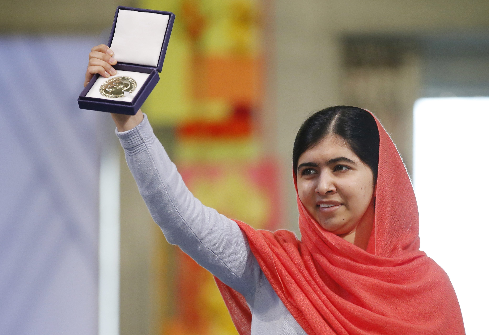

Sua história
Malala Yousafzai nasceu no Vale do Swat, no norte do Paquistão. Filha de Ziauddin Yousafzai e de Tor Pekai Yousafzai, ao nascer, nenhum vizinho foi dar os parabéns aos seus pais, pois em algumas regiões do Paquistão, como no Vale do Swat, só o nascimento de meninos é celebrado. As meninas são obrigadas a se casar cedo e ter filhos aos 14 anos, porém Malala escapou desse destino graças à sua família que sempre apoiou sua vontade de estudar.
Sua mãe vivia na cozinha, e seu pai, um professor edono de escola, viu em Malala uma aluna perfeita e,contrariando os hábitos locais, depois de colocaros dois filhos para dormir, estimulava a filha agostar de física, literatura, história e política ea se indignar com as injustiças do mundo.
Quando tinha 10 anos, Malala viu o Talibã fazer do Vale do Swat seu território. Sob o governo paralelo da milícia fundamentalista, as escolas foram obrigadas a fechar as portas – as que desobedeceram foram dinamitadas. Nessa época, Malala estudava na escola da qual seu pai era dono e que, como as demais, teve que ser fechada.
Em 2008, com 11 anos, Malala já defendia em seu blog o direito das meninas de frequentar a escola. Com 12 anos, para continuar indo à escola, escondia o uniforme dentro da mochila para não ser atacada e espancada no caminho.
Em 2010, embora o governo tenha anunciado a expulsão do Talibã da região do Vale do Swat, no Paquistão, a milícia continuava rondando a área. Malala, que já era conhecida por defender em entrevistas e palestras o direito das meninas à educação, passou a receber ameaças de morte.
No dia 9 de outubro de 2012, com 15 anos, Malala que estudava na província de Khyber Pakhtunkhwa, enquanto voltava para casa, seu ônibus escolar foi parado por membros do Talibã, onde entraram e perguntaram: “Quem é Malala?”. Ninguém respondeu, mas um dos terroristas a reconheceu e disparou três tiros em sua cabeça.
Malala foi socorrida e levada para um hospital, onde permaneceu em estado grave. Quando apresentou alguma melhora, foi levada para Birmingham, na Inglaterra, para ser tratada em um hospital especializado no atendimento aos feridos de guerra.
Malala sobreviveu ao atentado, recuperou-se e continuou a lutar pelo direito das meninas pela educação. Sua família mudou-se para Birmingham, onde vive exilada.
No dia 12 de julho de 2013, quando comemorou 16 anos, Malala foi para Nova Iorque, onde falou para uma plateia de representantes de mais de 100 países na Assembleia de Jovens das Nações Unidas. No fim do discurso, deixou claro que a causa pela qual chegou perto de morrer permanece a mesma: “Nossos livros e canetas são as armas mais poderosas. Uma criança, um professor, um livro e uma caneta podem mudar o mundo. Educação é a única solução”.
Prêmio Nobel
No dia 10 de outubro de 2014, com 17 anos, Malala recebeu o “Prêmio Nobel da Paz”, tornando-se a mais jovem ganhadora da premiação. A honraria foi dividida com o hindu Kailash Satyarthi, de 60 anos, que liderou missões para resgatar 80 000 crianças que trabalhavam em condições de escravidão na Índia.

No dia 12 de julho de 2013, quando comemorou 16 anos, Malala foi para Nova Iorque, onde falou para uma plateia de representantes de mais de 100 países na Assembleia de Jovens das Nações Unidas. No fim do discurso, deixou claro que a causa pela qual chegou perto de morrer permanece a mesma: “Nossos livros e canetas são as armas mais poderosas. Uma criança, um professor, um livro e uma caneta podem mudar o mundo. Educação é a única solução”.
Em 2020, com 22 anos, oito anos após sofrer o atentado, Malala Yousafzai concluiu a faculdade de Filosofia Política e Econônica, pela Universidade de Oxford.
Fonte: ebiografia